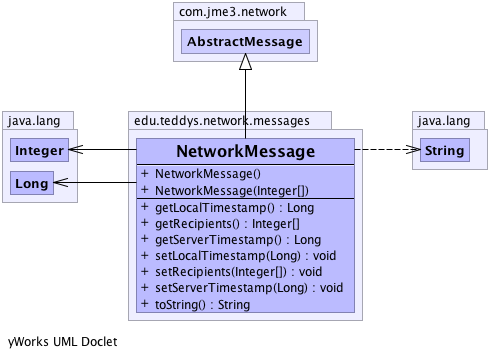

edu.teddys.network.messages
Class NetworkMessage
java.lang.Object
 com.jme3.network.AbstractMessage
edu.teddys.network.messages.NetworkMessage
com.jme3.network.AbstractMessage
edu.teddys.network.messages.NetworkMessage
- All Implemented Interfaces:
- com.jme3.network.Message
- Direct Known Subclasses:
- NetworkMessageGameState, NetworkMessageInfo, NetworkMessageManipulation, NetworkMessageRequest, NetworkMessageResponse
public class NetworkMessage
- extends com.jme3.network.AbstractMessage
The base class of network messages. There is always one mandatory field:
the source (sender). For clients, the ID is positive (>= 0). The server
however uses ID 0 as well.
To prevent multiple transfers of the same message maybe caused by a defect
network infrastructure, use a timestamp for identification which is auto-
generated.
-
-

| Methods inherited from class com.jme3.network.AbstractMessage |
isReliable, setReliable |
| Methods inherited from class java.lang.Object |
clone, equals, finalize, getClass, hashCode, notify, notifyAll, wait, wait, wait |
NetworkMessage
public NetworkMessage()
NetworkMessage
public NetworkMessage(java.lang.Integer[] recipients)
getLocalTimestamp
public java.lang.Long getLocalTimestamp()
setLocalTimestamp
public void setLocalTimestamp(java.lang.Long timestamp)
- Should be set because of the latency calculation.
- Parameters:
timestamp -
getServerTimestamp
public java.lang.Long getServerTimestamp()
setServerTimestamp
public void setServerTimestamp(java.lang.Long serverTimestamp)
getRecipients
public java.lang.Integer[] getRecipients()
setRecipients
public void setRecipients(java.lang.Integer[] recipients)
toString
public java.lang.String toString()
- Overrides:
toString in class java.lang.Object